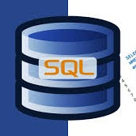
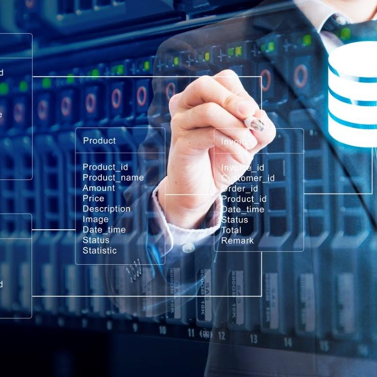

MySQL es rápido, confiable, escalable y fácil de usar. MySQL puede ejecutarse cómodamente en una computadora de escritorio o laptop, junto con tus
otras aplicaciones, servidores web, etc. Y requiere poca o nula atención. Si dedicas una máquina completa a MySQL, puedes ajustar la configuración
para aprovechar toda la memoria, la potencia de CPU y la capacidad de E/S disponibles, algunas ventajas pueden ser:
ARQUITECTURA CLIENTE
Y SERVIDOR
MySQL basa su funcionamiento en un modelo cliente y servidor,
es decir, se comunican entre si de manera diferenciada para un mejor rendimiento.
Cada cliente puede hacer consultas para obtener datos, modificar, guardar cambios o
hacer nuevos registros.

COMPATIBILIDAD SQL
SQL es un lenguaje generalizado dentro de la industria.
Al ser un estándar MySQL ofrece plena compatibilidad por
lo que si has trabajado en otro motor de bases de datos no tendrás
problemas en migrar a MySQL.

PROCEDIMIENTOS ALAMCENADOS
MySQL posee la característica de no procesar las tablas directamente,
sino que a través de procedimientos almacenados es posible incrementa
la eficiencia de nuestra implementación.